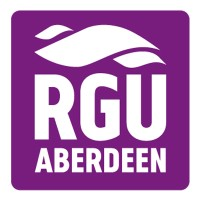
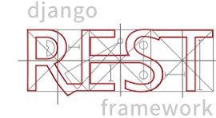
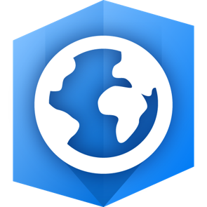
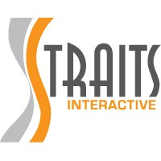
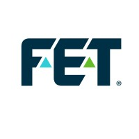
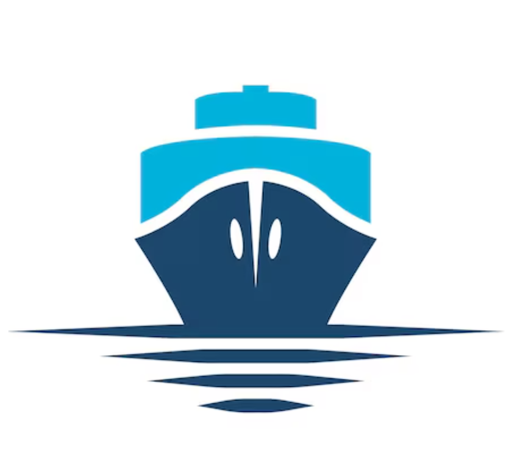

MSc Data Analytics (Distinction)
Dissertation: A study of machine learning algorithms used within data analysis to determine property pricing prediction models for homogenous public housing in Singapore.
Data Analytics | Spatial Data | AI Applications
My career has focused on the usage of data and how to manipulate data sources within computerised systems into the best resources. Projects have included 2D data, enhancing 2D data with spatial data to complex 3D mapping data for pipeline surveys and providing simulation of ROV environments for training missions.
My desire is to continue developing data services that enable users to harness, visualise and benefit from the power of varied data sources.
Dissertation: A study of machine learning algorithms used within data analysis to determine property pricing prediction models for homogenous public housing in Singapore.

 Django
Django

Django REST Framework JavaScript
JavaScript

ArcGIS Google Cloud
Google Cloud
 Azure
Azure
 Git
Git
 MongoDB
MongoDB
 PostgreSQL
PostgreSQL
 HTML
HTML
 CSS
CSS

Feb 2023 - Present
Developing innovative products using Artificial Intelligence and orchestrating the technical transition to a serverless CI/CD architecture on Google Cloud Platform.
Design and development of web based AI applications: capabara.com
Dec 2022 - Feb 2023
Development of a digital transformation, operation, and analytic application for hospitals.
Nov 2017 - Dec 2022

Aug 2013 - Oct 2017
Jan 2013 - Aug 2013
Aug 2008 - Dec 2012

Oct 2005 - Aug 2008
May 1998 - Aug 1999